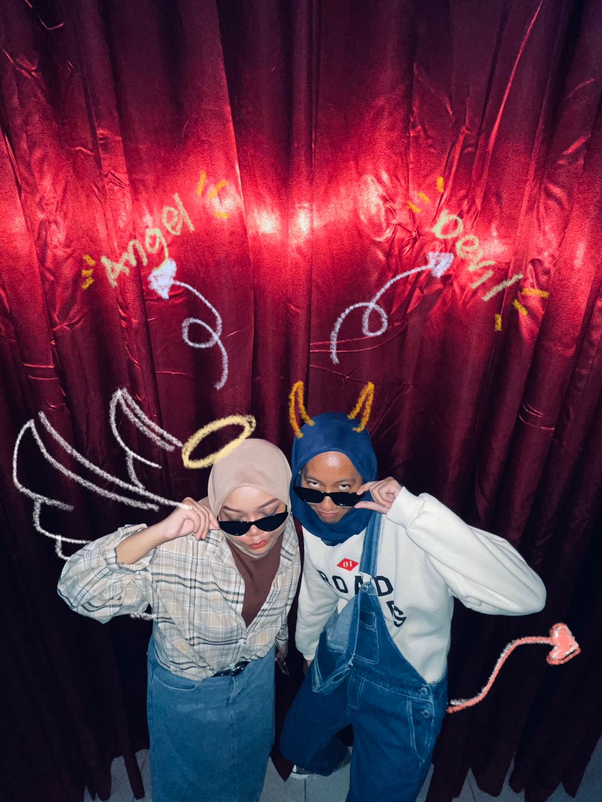

A favorite person is someone who holds a special place in your heart. They're the individual you admire, enjoy spending time with, and feel a strong connection to. This person might bring out the best in you, offer support during tough times, and share your joys and sorrows. They're someone you resonate with deeply, someone whose company you cherish and whose opinions matter to you. A favorite person isn't necessarily a romantic partner; they could be a friend, family member, mentor, or even someone you look up to from a distance, like a celebrity or public figure. The bond with a favorite person often involves mutual respect, understanding, trust, and shared interests, making them someone you feel comfortable being yourself around. They're the person you turn to for advice, companionship, and laughter.
DANIAL | 
ALEEYA |
DEANA |
AMAL |